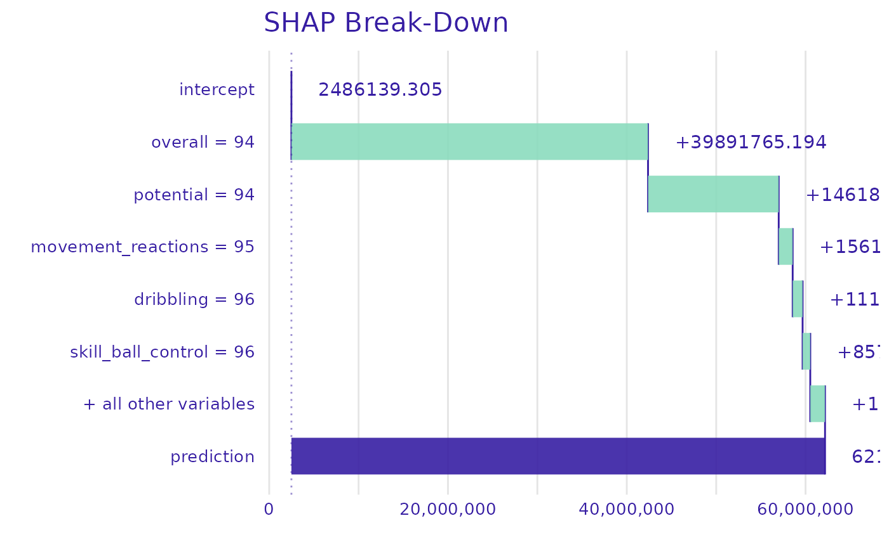

Convert your GBM model into a standardized representation.
The returned representation is easy to be interpreted by the user and ready to be used as an argument in treeshap() function.
gbm.unify(gbm_model, data)An object of gbm class. At the moment, models built on data with categorical features
are not supported - please encode them before training.
Reference dataset. A data.frame or matrix with the same columns as in the training set of the model. Usually dataset used to train model.
a unified model representation - a model_unified.object object
library(gbm)
#> Loaded gbm 2.1.8.1
data <- fifa20$data[colnames(fifa20$data) != 'work_rate']
data['value_eur'] <- fifa20$target
gbm_model <- gbm::gbm(
formula = value_eur ~ .,
data = data,
distribution = "gaussian",
n.trees = 20,
interaction.depth = 4,
n.cores = 1)
unified_model <- gbm.unify(gbm_model, data)
shaps <- treeshap(unified_model, data[1:2,])
#>
|0%----|------|20%---|------|40%---|------|60%---|------|80%---|------|100%
#> =---------------------------------------------------------------------- (0%)
====================================----------------------------------- (50%)
======================================================================= (100%)
plot_contribution(shaps, obs = 1)
